SPORTS MEDICINE & ARTHROSCOPY DIGEST
运动医学 · 关节镜文献速览
第 008 期 · 2026-09-15
近 48 小时（9月13–14日）10 本核心期刊新收录 39 篇（去重后本期精选 14 篇）
按关节分类：膝 6 · 髋 2 · 肩 4 · 运动防护 1 · 其他 1 ｜ 含 3 篇系统综述/Meta · 4 篇手术技术
编者按 EDITOR'S NOTE
本期覆盖 9 月 13–14 日（近 48 小时窗口，因单日检出仅 4 篇不足 5 篇而启用兜底），10 本核心期刊共检出 39 篇，剔除上期已收录者后精选 14 篇。本期膝、肩两条线依然最密集，髋关节镜也有一篇高质量系统综述值得关注。
本期有两个「和直觉相反」的发现值得单独拎出来。第一，PRP 用于肩袖修复：关节镜下注射乏白细胞 PRP 确实把再撕裂率从 29.0% 降到 15.9%（OR 2.16，P=.001），力学愈合改善是真实的；但所有功能评分的改善幅度都没达到最小临床重要差异（MCID）。也就是说，影像上「长好了」，患者主观上却没觉得更好——这对我们反复向患者解释「PRP 值不值」很有帮助。第二，部分层厚肩袖撕裂用 PRP 时，血小板浓度高低与疼痛改善无关，10 项 I 级 RCT、635 例的 Meta 回归支持这一点，没必要为追求「高浓度 PRP」额外付费。
另外两条临床相关性强：一是 TKA 术前有同侧膝关节手术史者的假体周围感染风险按术式分层，膝关节感染史者 PJI 翻修风险最高（OR 3.30）、胫骨截骨次之（OR 2.12），而累计手术超过 2 次感染风险才显著升高——术前问诊应把「做过什么手术」问细，而不只是问「做过几次」。二是髋关节镜治疗 ≥40 岁 FAI 患者，5–10 年功能改善稳定、THA 转换率 2.9%–13.2%，多数指标与年轻组无显著差异，说明年龄本身不应成为拒绝髋关节镜的理由。
▍膝关节 · 6 篇
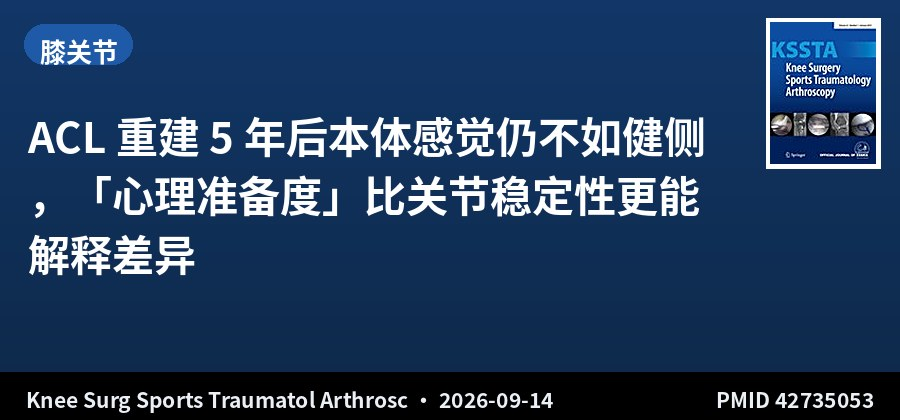
回顾性队列 · III级证据 · 69例 · 随访5年+
ACL 重建 5 年后本体感觉仍不如健侧，「心理准备度」比关节稳定性更能解释差异
Psychological readiness is associated with long-term joint awareness after isolated anterior cruciate ligament reconstruction: A within-patient comparison with the contralateral healthy knee
Knee Surg Sports Traumatol Arthrosc · 2026-09-14 · 土耳其多中心 · PMID 42735053
一句话结论：69 例腘绳肌腱 ACLR 平均随访 68.5 个月，重建侧 FJS-12 评分显著低于健侧（81.2 vs 90.1，p<0.001）；ACL-RSI（心理准备度）独立预测重建侧 FJS-12（β=0.833，p<0.001）及双膝差值（β=0.668，p<0.001）。
要点：仅纳入单纯 ACL 重建（排除合并半月板、软骨、多韧带损伤及关节外手术），采用患者自身健侧作为对照，属高证据强度的配对设计。残余不稳者 ACL-RSI、FJS-12、IKDC、Lysholm 均显著更低（均 p<0.001）。中介分析显示 pivot shift 状态对 FJS-12 的影响部分通过 ACL-RSI 传导（95%CI -11.06~-5.29）。
对临床的启示：「忘记关节」是患者最在意的长期体验，这项自身对照研究说明它并不只取决于力学稳定。即使 ACL-RSI 与客观稳定性互为因果、无法完全分离，临床上仍提示：术后心理干预（重建信心、恢复运动恐惧的脱敏）与力学重建同等重要。对 pivot shift 阳性但主诉「心里没底」的患者，两条线都要处理。
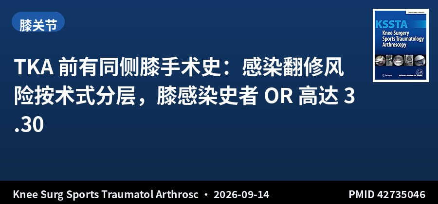
大数据队列 · III级证据 · 121692例TKA
TKA 前有同侧膝手术史：感染翻修风险按术式分层，膝感染史者 OR 高达 3.30
Not all previous surgeries are the same: Procedure-specific infection risk in total knee arthroplasty patients with a history of previous knee surgery
Knee Surg Sports Traumatol Arthrosc · 2026-09-14 · 国际多中心注册数据 · PMID 42735046
一句话结论：121,692 例 TKA 中 33.3% 有同侧膝手术史。按术式分层，既往膝感染手术者 PJI 翻修风险最高（OR 3.30），其后依次为胫骨截骨（OR 2.12）、滑膜切除（OR 2.18）、胫骨内固定（OR 1.71）和 ACL 重建（OR 1.44）。
要点：2 年随访，全因翻修 4232 例（3.5%），PJI 翻修 803 例（0.7%）。多因素 Logistic 回归校正年龄、性别、BMI、ASA 分级。感染风险仅累计手术 >2 次者才显著升高（OR 2.01，95%CI 1.51–2.68，p<0.001）。任何既往手术均独立关联全因翻修（OR 1.33）与 PJI 翻修（OR 1.22）。
对临床的启示：「做过几次手术」不是最有用的问法，「做过什么手术」才是。术前评估时应逐项确认既往术式：有膝感染史或胫骨高位截骨史者属高危，需强化术前优化（血糖、戒烟、鼻腔去定植）并交代感染风险。累计超过 2 次手术同样进入高危区间。大数据队列证据稳健，但为注册库回顾性数据，术式与感染的因果链仍需前瞻验证。
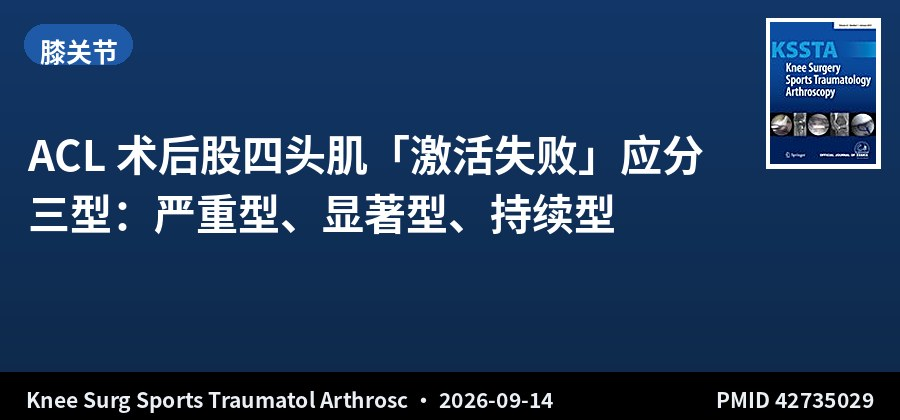
专家述评 · 术语与康复框架
ACL 术后股四头肌「激活失败」应分三型：严重型、显著型、持续型
Arthrogenic muscle inhibition and quadriceps activation failure: Reconciling terminology and clinical perspectives across recovery phases
Knee Surg Sports Traumatol Arthrosc · 2026-09-14 · 瑞士洛桑 · PMID 42735029
一句话结论：述评主张用「股四头肌激活失败」替代「关节源性肌肉抑制」这一术语——前者只描述临床现象，不预设机制，更符合疼痛、废用、疲劳、心理等多因素共同作用的实际；并提出按程度与时间演变分为严重、显著、持续三种表现。
要点：三型对应不同康复阶段：严重型见于急性损伤后与术后早期；显著型贯穿大部分康复期；持续型在肌力恢复、甚至重返运动后仍可检出。作者认为统一术语有助于医研沟通、个体化康复策略制定与恢复监测，该框架同样适用于其他伴激活缺陷的肌骨疾病。
对临床的启示：对康复处方有直接指导意义：不要把「腿抬不起来」笼统归因为「肌肉抑制」而只是等待。按阶段识别——早期重点在消肿镇痛、显著期重点在渐进负荷、持续期需关注即使力量测试正常也可能存在的激活缺陷。这也提醒我们：力量测试正常不等于神经肌肉控制已恢复，重返运动评估应包含激活质量。属观点述评，非原始研究。
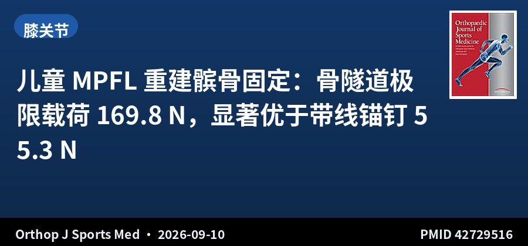
尸体生物力学 · 儿童标本 · 10膝
儿童 MPFL 重建髌骨固定：骨隧道极限载荷 169.8 N，显著优于带线锚钉 55.3 N
Biomechanical Comparison of Patellar Fixation Techniques in Medial Patellofemoral Ligament Reconstruction: A Pediatric Cadaveric Study
Orthop J Sports Med · 2026-09-10 · 匹兹堡大学等（美国） · PMID 42729516
一句话结论：10 例儿童（平均 9.8 岁）尸体髌骨，骨隧道固定极限失败载荷 169.8±88.6 N，显著高于带线锚钉的 55.3±20.1 N（P=.002）；两组刚度无差异（6.0 vs 6.4 N/mm，P=.647）。
要点：带线锚钉组使用 2 枚 1.8 mm 全缝线锚钉，骨隧道组钻取 2 个 2 mm 隧道。失败模式均为特征性：锚钉组全部为锚钉拔出，骨隧道组全部为缝线切割（cheese-wiring）骨质。这是首个针对儿童标本的 MPFL 髌骨固定生物力学研究。
对临床的启示：儿童复发性髌骨脱位的髌骨侧固定方式选择有了直接的力学依据：骨隧道在极限载荷上是锚钉的 3 倍。但要注意，儿童髌骨骨量小、骨骺未闭，隧道钻孔本身的技术难度与生长板风险需权衡——骨骼未成熟者仍需结合具体骨龄与髌骨发育情况个体化决策。离体时间零点研究，不能直接外推至临床愈合。
原文：doi.org/10.1177/23259671261465205
📷 原文图片（共 4 张 · 左右滑动查看）
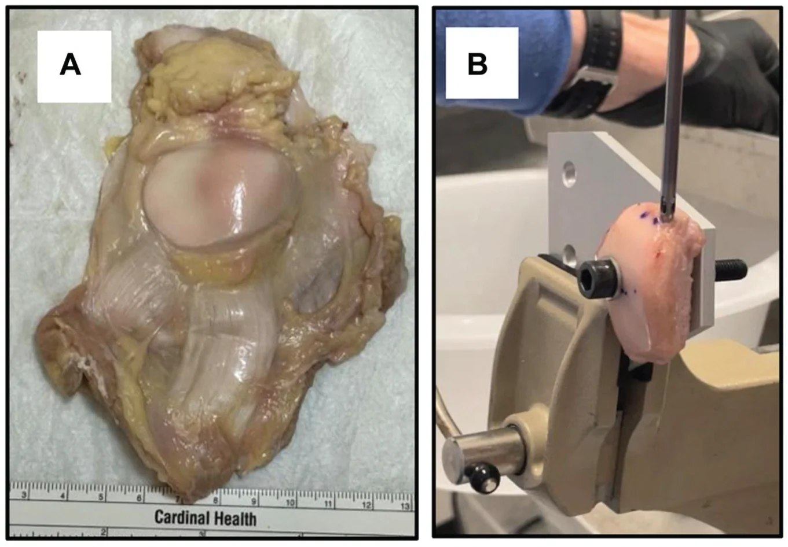
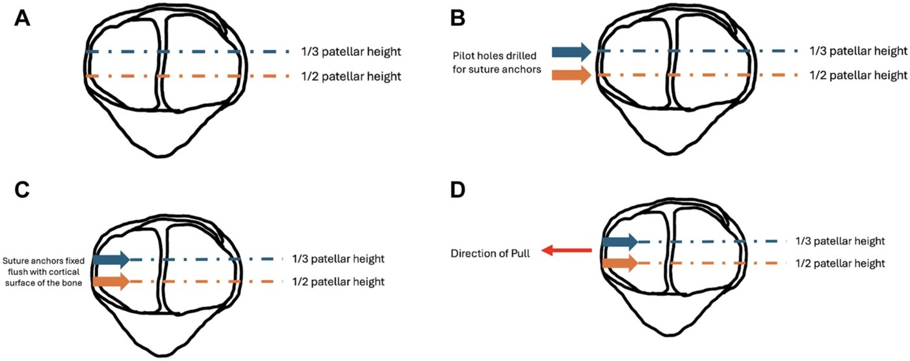
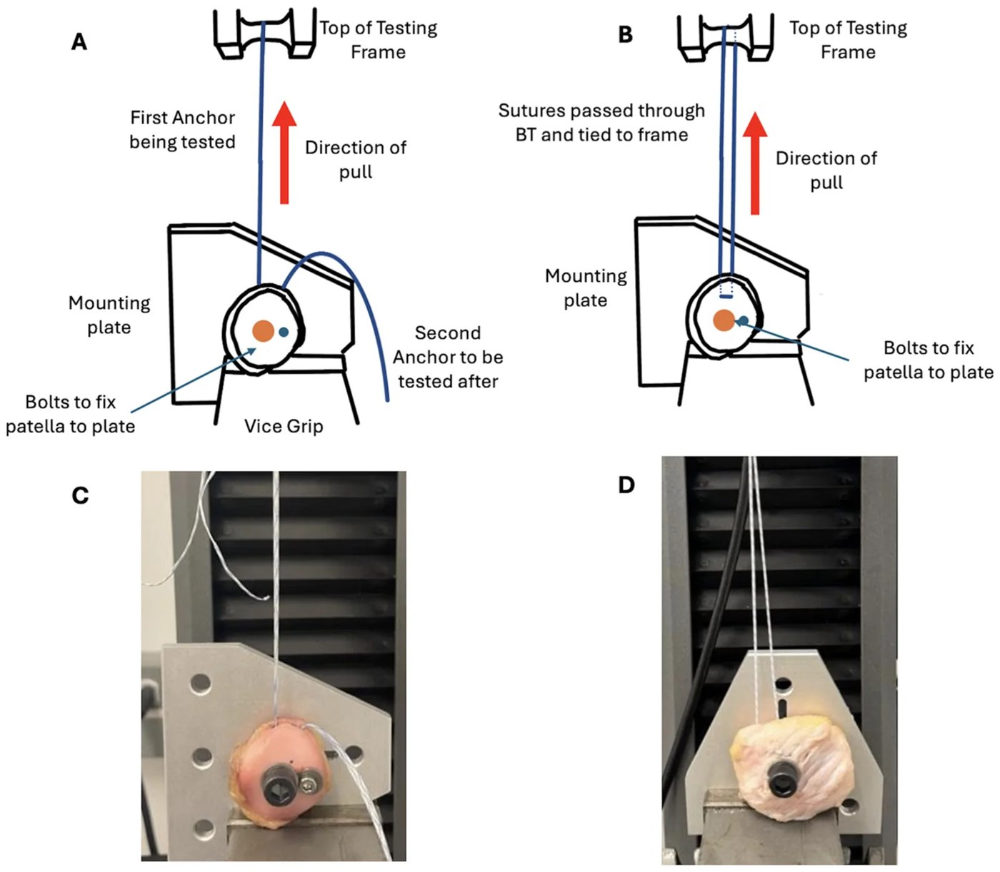
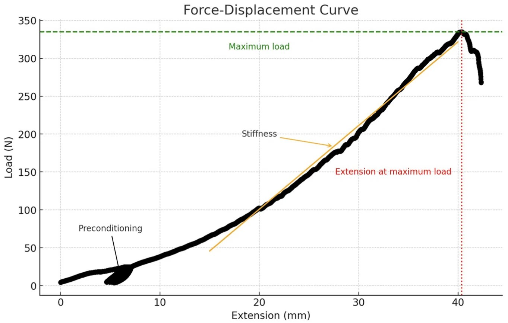
图片来源：原文开放全文（PubMed Central），版权归原出版方
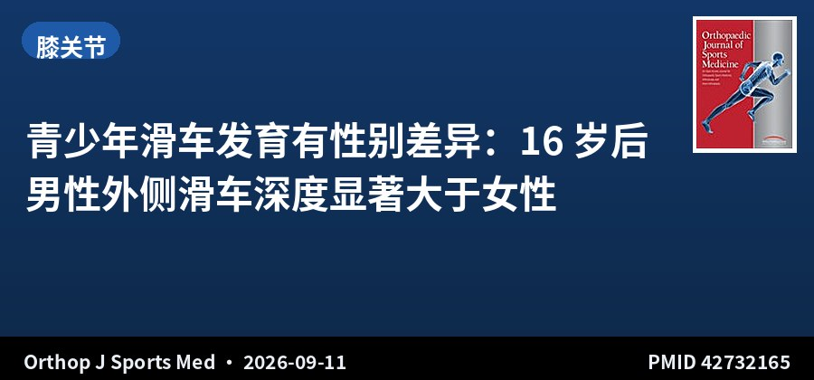
3D 深度学习建模 · III级证据 · 261膝
青少年滑车发育有性别差异：16 岁后男性外侧滑车深度显著大于女性
Sex-Specific Adolescent Development of the Trochlea and Distal Femoral Physis: A 3D Shape Modeling Study
Orthop J Sports Med · 2026-09-11 · 斯坦福大学 / 匹兹堡大学（美国） · PMID 42732165
一句话结论：261 例 8–22 岁非发育不良膝关节 MRI，13–19 岁期间两性均出现骨骺向近端迁移与滑车加深，外侧滑车深度大于内侧；16 岁后男性经体量标准化的外侧滑车深度显著大于女性（外侧滑车增长速率两性相似）。
要点：采用深度学习分割股骨骨干与骨骺，构建性别特异的远端股骨形态与骨骺位置统计形状模型。研究背景是滑车发育不良为髌骨不稳主要危险因素，而滑车成形术在骨骺未闭者有生长板损伤风险。
对临床的启示：为青少年髌骨不稳的时机判断提供了发育学基线：16 岁后男性滑车形态仍在塑形，此时若考虑骨性干预需格外谨慎。也提示评估青少年滑车发育不良时应结合性别与年龄参照，不能沿用成人标准。横断面研究，无法确立因果关系，具体手术时机仍需结合骨龄与临床。
原文：doi.org/10.1177/23259671261463132
📷 原文图片（共 4 张 · 左右滑动查看）
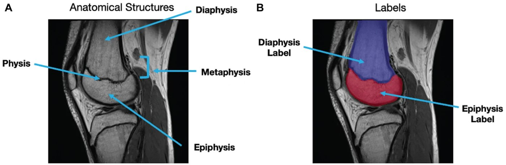
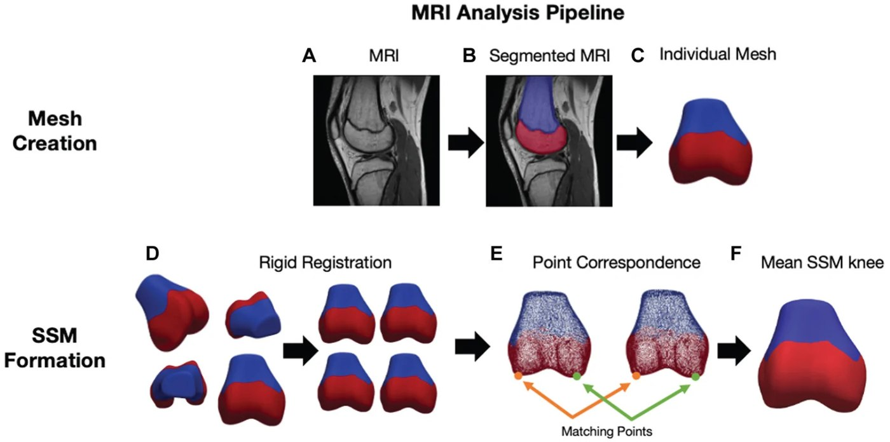
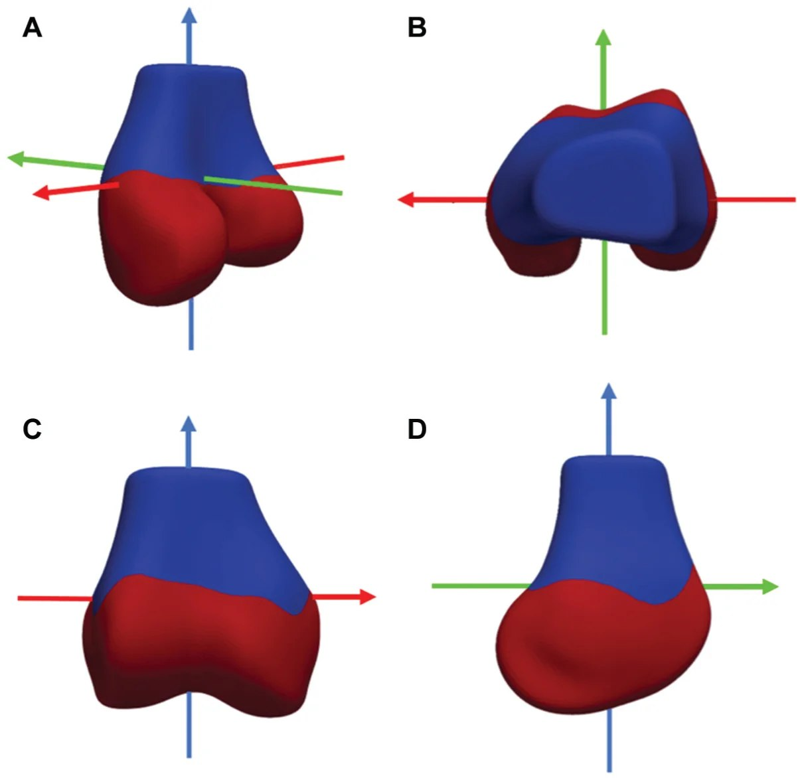
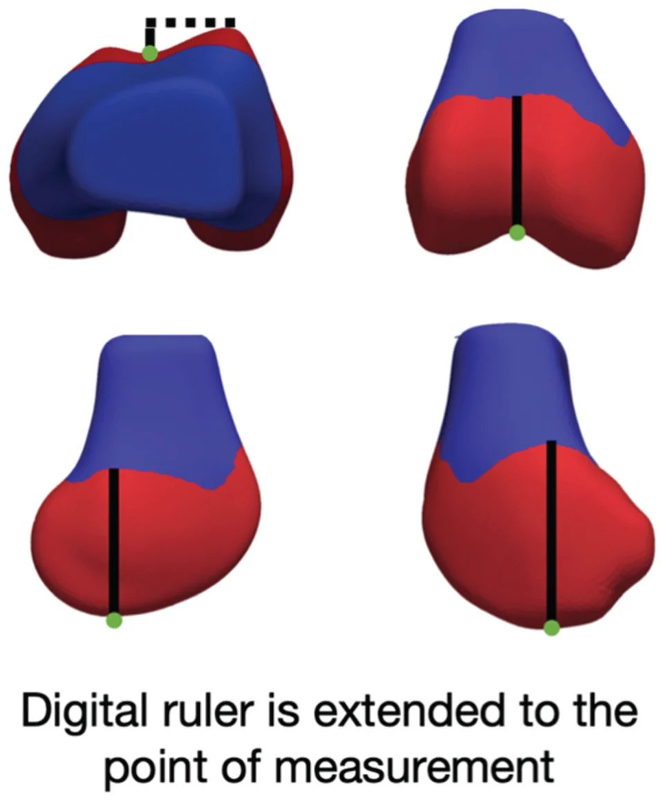
图片来源：原文开放全文（PubMed Central），版权归原出版方
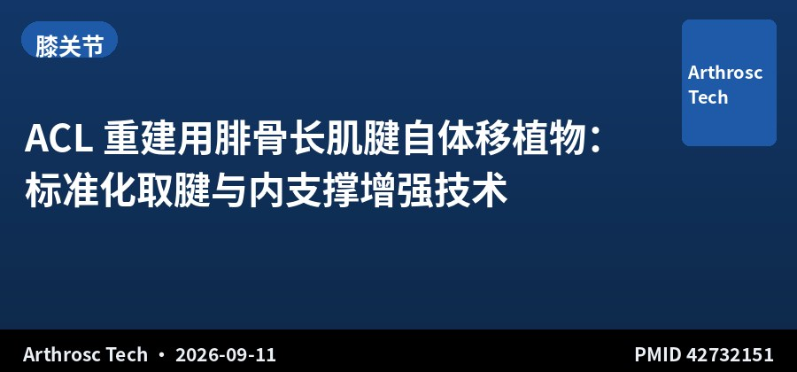
手术技术 · Arthrosc Tech
ACL 重建用腓骨长肌腱自体移植物：标准化取腱与内支撑增强技术
Peroneus Longus Autograft Harvest and Preparation for Anterior Cruciate Ligament Reconstruction
Arthrosc Tech · 2026-09-11 · 美国多中心 · PMID 42732151
一句话结论：系统描述腓骨长肌腱（PLT）自体移植物的取腱与制备步骤，含内支撑（internal brace）增强，旨在将这一术式标准化、便于推广应用。
要点：PLT 因生物力学特性好、移植物直径稳定、供区并发症少而成为 ACL 重建的候选自体移植物，但文献中缺乏详细的取腱与制备描述。该技术报告给出可重复的分步方法，并支持后续针对 PLT 自体移植物的研究。
对临床的启示：对腘绳肌腱条件不佳（直径偏细、既往取过）、又希望避免同种异体移植物的患者，PLT 是一个值得纳入选择的方案。需要注意的是取腱位置邻近腓总神经走行区、且可能影响踝关节外翻与第一跖趾关节跖屈功能，操作应严格按解剖标志进行。技术报告，缺乏长期临床随访数据。
📷 原文图片（共 4 张 · 左右滑动查看）
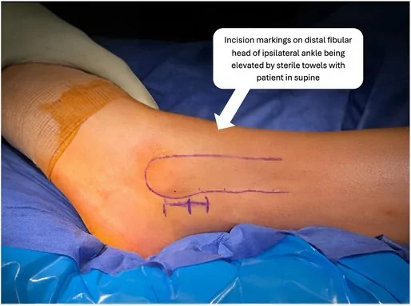
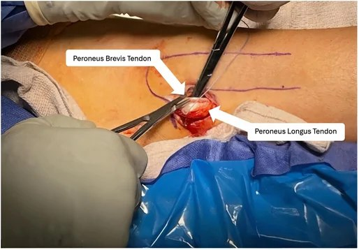
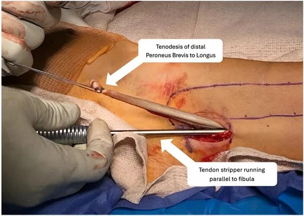
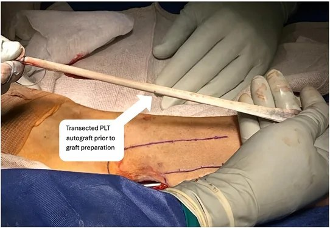
图片来源：原文开放全文（PubMed Central），版权归原出版方
▍髋关节 · 2 篇
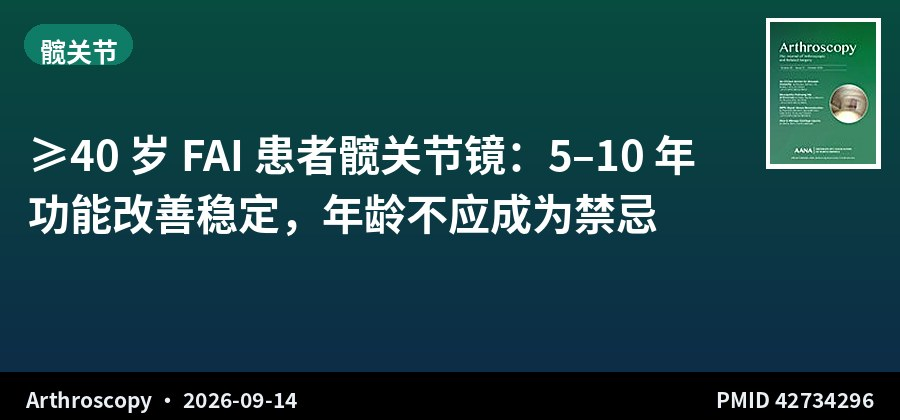
系统综述 · IV级证据 · 9项研究 451例
≥40 岁 FAI 患者髋关节镜：5–10 年功能改善稳定，年龄不应成为禁忌
Hip Arthroscopy for Femoroacetabular Impingement Syndrome in Patients Aged ≥40 Years Produces Durable Functional Improvement With Moderate Survivorship Compared With Younger Cohorts: A Systematic Review
Arthroscopy · 2026-09-14 · 纽约大学朗格尼医学中心（美国） · PMID 42734296
一句话结论：9 项研究、451 例（467 髋）≥40 岁 FAI 患者，随访 60–167 个月，mHHS 由基线 40.5–73 改善至末次随访 72.9–96；THA 转换率 2.9%–13.2%，多数结局指标与年轻组无显著差异。
要点：随访 5–10 年，5 项报告中期结局的研究（≥5 年，202 髋）术后 mHHS 异质性中等（I2=41.8%）。达到 mHHS 最小临床重要差异方面，老年组与年轻组无显著差异；达到可接受症状状态方面，2 项研究显示年轻组更优（P=.04），另 2 项无差异。
对临床的启示：对 40 岁以上 FAI 患者，「年龄大」本身不应作为拒绝髋关节镜的理由，但需向患者说明转换 THA 的概率（本研究跨度为 3%–13%）。选择患者时更应关注关节软骨状态（Tönnis 分级）而非单纯年龄。系统综述证据等级受纳入研究质量限制，且各研究随访时长与终点定义不一，异质性需注意。
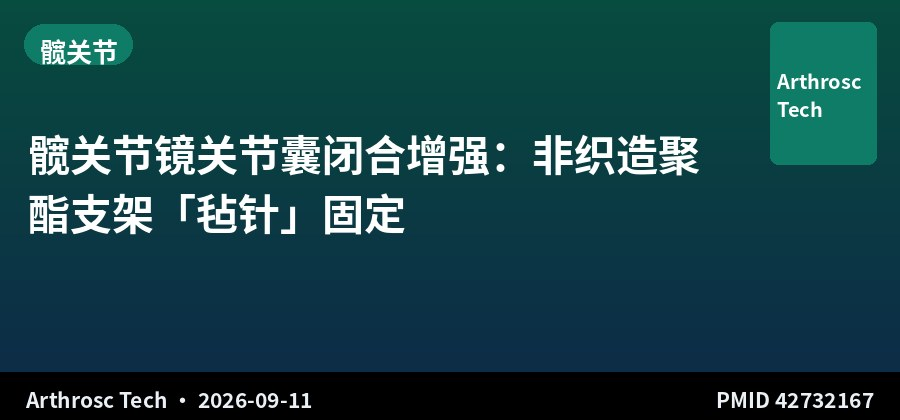
手术技术 · Arthrosc Tech
髋关节镜关节囊闭合增强：非织造聚酯支架「毡针」固定
Arthroscopic Hip Capsule Closure Augmented With a Nonwoven Polyethylene Terephthalate Scaffolding
Arthrosc Tech · 2026-09-11 · 美国 · PMID 42732167
一句话结论：介绍使用非织造聚对苯二甲酸乙二醇酯（PET）增强材料、以「毡针」机制固定于自体关节囊组织，实现髋关节镜术中关节囊增强闭合的技术。
要点：关节囊闭合对改善髋关节镜患者报告结局、降低翻修风险的价值日益明确，但并非所有术者都做闭合，也并非所有闭合都能良好愈合，原因包括组织质量差与技术难度高。该技术旨在时间零点提供力学强度更高的增强修补，且操作相对易学。
对临床的启示：对关节囊组织菲薄、既往手术致囊壁质量差、或需大范围切开显露的髋关节镜病例，这一增强闭合方法提供了新思路，有助于降低术后微不稳风险。属技术报告，无临床随访数据，增强材料的长期降解行为与组织整合情况尚待观察。
📷 原文图片（共 4 张 · 左右滑动查看）
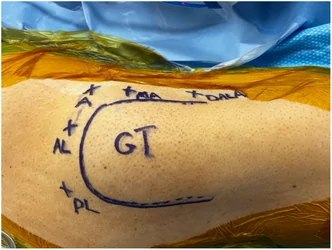
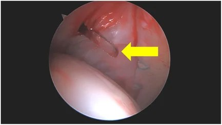
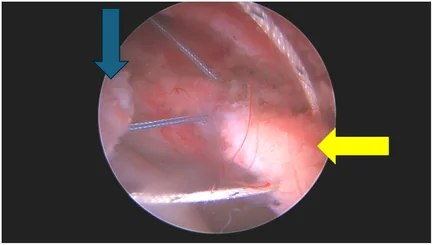
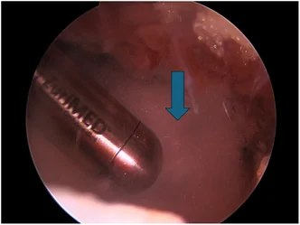
图片来源：原文开放全文（PubMed Central），版权归原出版方
▍肩关节 · 4 篇
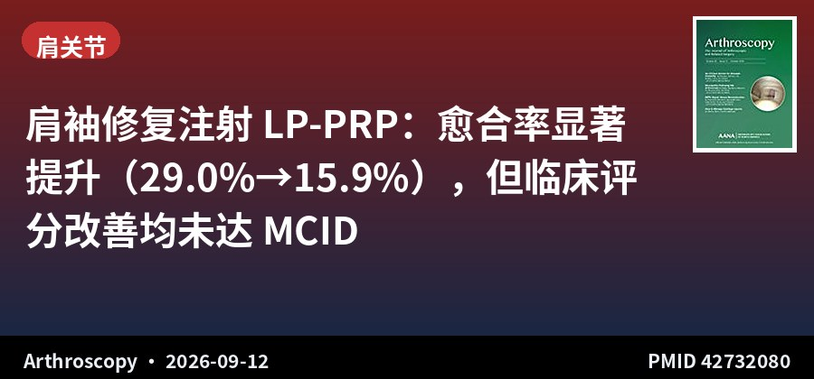
系统综述+Meta · I级证据 · 5项RCT 470例
肩袖修复注射 LP-PRP：愈合率显著提升（29.0%→15.9%），但临床评分改善均未达 MCID
Injection of Leukocyte-Poor Platelet-Rich Plasma During Rotator Cuff Repair Can Increase Healing Rate but Does Not Affect Clinical Outcomes: A Systematic Review and Meta-analysis of Randomized Controlled Trials
Arthroscopy · 2026-09-12 · 塞萨洛尼基亚里士多德大学（希腊） · PMID 42732080
一句话结论：5 项 RCT、470 例，LP-PRP 组再撕裂率 15.9% vs 对照 29.0%（OR 2.16，95%CI 1.34–3.48，P=.001，RR 0.55），但所有功能评分改善幅度均未达到最小临床重要差异（MCID）。
要点：检索 4 大数据库至 2025 年 8 月，仅纳入 I/II 级研究、随访>6 个月。LP-PRP 组 Constant 评分在 6、12、24 个月均有统计学优势（均 P≤.003），SANE、UCLA、VAS 亦有改善，但幅度未达 MCID。两组并发症率相当（9.4% vs 7.7%，P=.508）。
对临床的启示：这是回答患者「要不要加 PRP」的实用证据：加 PRP 确实能提高肌腱愈合率（影像学获益真实），但患者主观功能未必觉得更好，且需要额外费用。对再撕裂风险高（巨大撕裂、退变明显、吸烟）的患者，力学愈合改善可能更有价值；对普通患者则应坦诚说明临床获益有限，让患者知情选择。
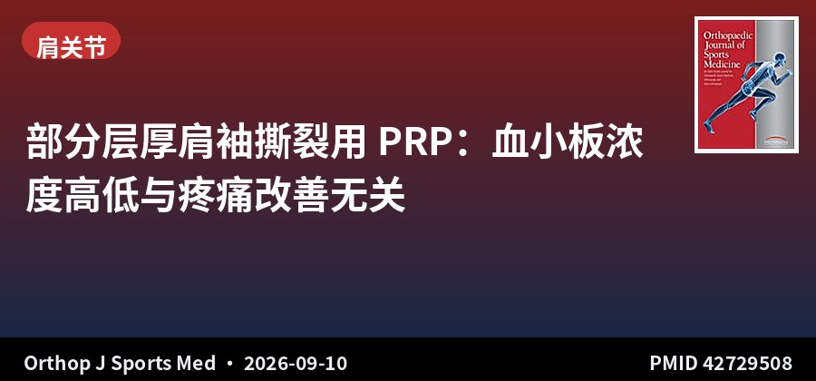
系统综述+Meta回归 · I级证据 · 10项RCT 635例
部分层厚肩袖撕裂用 PRP：血小板浓度高低与疼痛改善无关
Platelet Concentration Is Not Associated With Improved Pain for Partial-Thickness Rotator Cuff Tears Treated With Platelet-Rich Plasma: A Systematic Review and Meta-analysis With Meta-regression of Level 1 Randomized Controlled Trials
Orthop J Sports Med · 2026-09-10 · 科罗拉多大学（美国） · PMID 42729508
一句话结论：10 项 I 级 RCT、635 例（PRP 307 / 对照 328），Meta 分析与 Meta 回归均显示高剂量 PRP（>4 倍全血浓度）与低剂量 PRP 在注射后 VAS 疼痛评分上无显著差异。
要点：平均注射年龄 50.6 岁，平均随访 10.0 个月，男性占 44.4%。10 项研究中 6 项采用高剂量 PRP、4 项采用低剂量。检索 PubMed、Cochrane、Embase，仅纳入 I 级 RCT。
对临床的启示：临床上常有患者或机构推荐「浓度更高的 PRP 效果更好」，这项 I 级证据的 Meta 回归直接否定了这一假设。对部分层厚肩袖撕裂，选择 PRP 时不必为追求更高血小板浓度而增加成本，制备方法的选择可更多考虑可及性与经济性。注意结论仅限于疼痛这一维度，功能与愈合结局未在主要终点之列。
原文：doi.org/10.1177/23259671261480483
📷 原文图片（共 3 张 · 左右滑动查看）
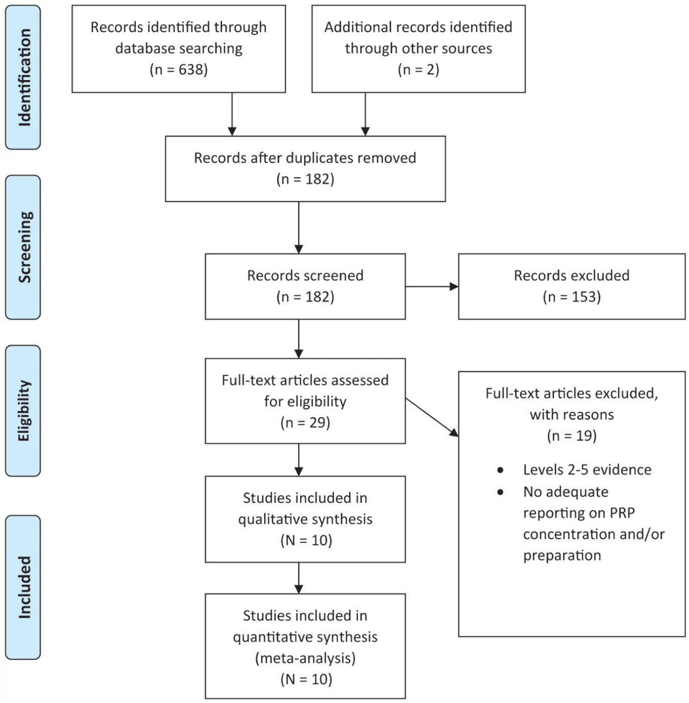
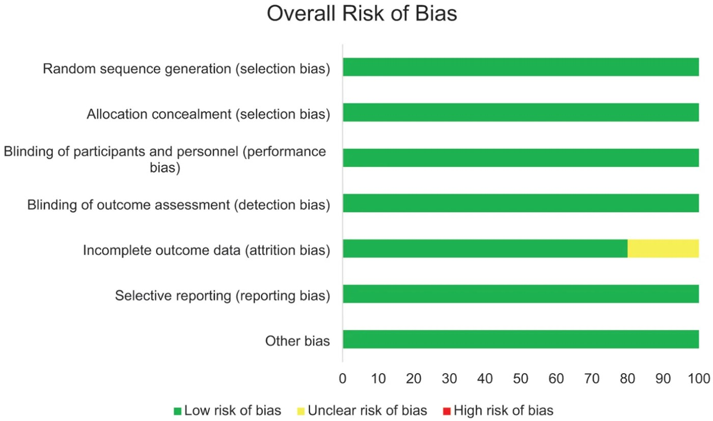
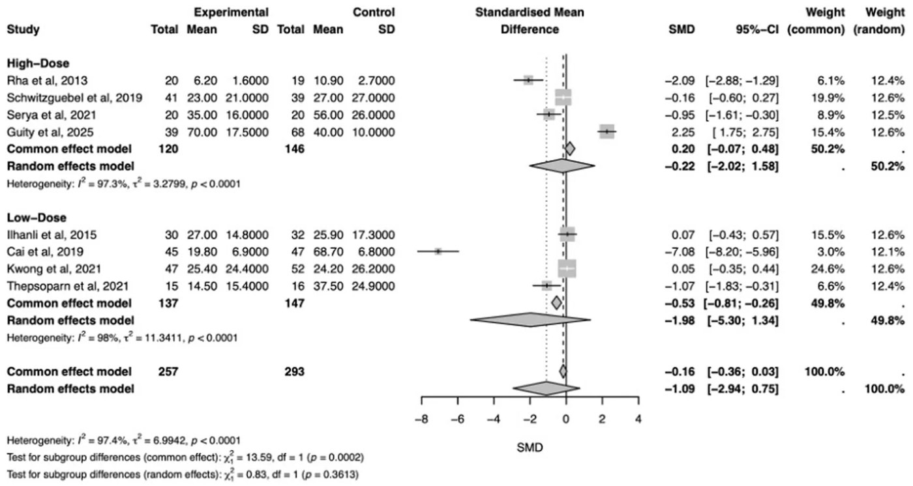
图片来源：原文开放全文（PubMed Central），版权归原出版方
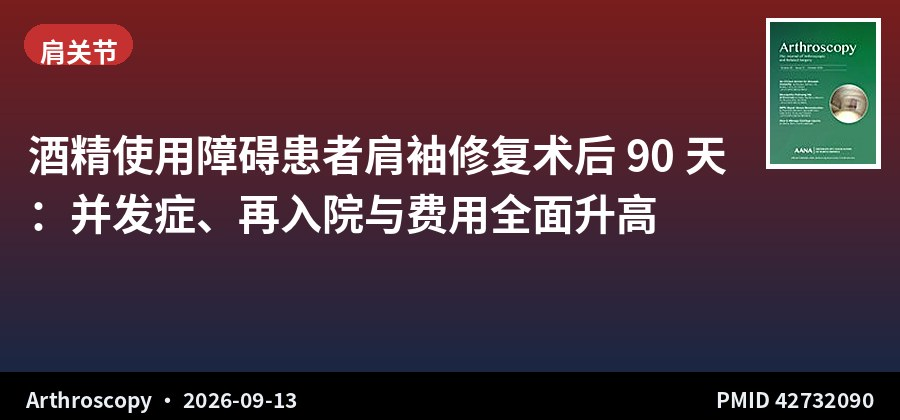
大数据配对 · III级证据 · 140886例
酒精使用障碍患者肩袖修复术后 90 天：并发症、再入院与费用全面升高
Alcohol Use Disorder Is Associated With Higher Rates of Adverse Events, Readmissions, and Costs of Care Within 90 Days of Arthroscopic Rotator Cuff Repair
Arthroscopy · 2026-09-13 · 纽约大学朗格尼医学中心（美国） · PMID 42732090
一句话结论：140,886 例肩袖修复患者中，酒精使用障碍（AUD）组 90 天不良事件发生率与再入院率显著更高，且手术当日与 90 天总体诊疗费用均升高。
要点：AUD 组 23,484 例、对照组 117,402 例，按年龄、性别、合并症 1:5 配对。90 天医学并发症涵盖脑血管意外、深静脉血栓、心肌梗死、肺炎、肺栓塞、手术部位感染、尿路感染与静脉血栓栓塞。采用 Logistic 回归计算 OR 与 95%CI。
对临床的启示：术前筛查酒精使用障碍具有实际价值：它不是道德问题，而是可量化的围手术期风险因素。对 AUD 患者应加强术前优化（营养、戒酒建议、血栓与感染防控）并做好并发症沟通。大数据配对设计统计效能强，但基于保险理赔数据库，AUD 诊断可能低估，且无法排除残余混杂。
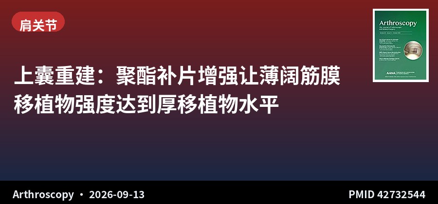
尸体生物力学 · 肩关节上囊重建
上囊重建：聚酯补片增强让薄阔筋膜移植物强度达到厚移植物水平
Reinforced Polyester Patch Augmentation Improves Biomechanical Properties of Thin Fascia Lata Grafts for Superior Capsule Reconstruction
Arthroscopy · 2026-09-13 · 大阪医科大学等（日本/美国） · PMID 42732544
一句话结论：薄阔筋膜移植物夹入增强聚酯补片后，线性刚度由 51.4±5.6 升至 85.0±4.4 N/mm、极限载荷由 435±59 升至 1144±61 N（P=.007、P=.01），与厚移植物相比无显著差异（P=.08、P=.97）。
要点：三组各 8 例标本：薄移植物（中位厚度 2.7/3.0 mm）、补片增强薄移植物（4.4/4.1 mm）、厚移植物（8.6/8.9 mm）。循环加载阶段三组在延伸、滞后、线性刚度上均无显著差异；失效测试阶段增强组优势显现。
对临床的启示：上囊重建常因移植物取材厚度不足而担心强度，这项研究给出了解决方案：不必强求取到很厚的阔筋膜，用增强补片即可把薄移植物力学性能提升到厚移植物水平。这对减少供区并发症、扩大手术适应证有帮助。属离体生物力学研究，补片的长期组织整合与临床结局仍需验证。
▍运动防护 · 1 篇
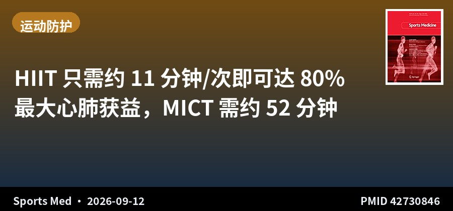
剂量反应Meta · I级证据 · 69项RCT 2387例
HIIT 只需约 11 分钟/次即可达 80% 最大心肺获益，MICT 需约 52 分钟
Optimising Exercise Prescription: A Meta-Analysis Examining the Dose Response of Exercise Duration on Cardiorespiratory Fitness Following HIIT and MICT
Sports Med · 2026-09-12 · 伯明翰大学等（英国/德国/荷兰） · PMID 42730846
一句话结论：69 项 RCT、2387 例，HIIT 对 VO2max 的改善优于 MICT（d=0.38，95%CI 0.27–0.49，p<0.001）；HIIT 呈非线性剂量反应，约 11 分钟/次即可达到 80% 最大效果，而 MICT 呈线性关系、需约 52 分钟/次。
要点：遵循 PRISMA 并在 PROSPERO 注册（CRD42022335590），采用单阶段随机效应剂量反应 Meta 分析。主要终点为最大摄氧量（VO2max），次要终点包括血压、血脂谱、糖代谢标志物与体成分。纳入运动干预≥4 周的英文 RCT。
对临床的启示：对运动处方和运动康复有直接价值：在时间效益上，HIIT 的优势不是「差不多」，而是数量级的差异——11 分钟对 52 分钟。对时间紧张的运动员、慢病康复与损伤后心肺功能维持人群，可作为处方依据。注意本研究终点为 VO2max 而非临床结局，且 HIIT 的关节负荷与损伤风险需与低强度方案权衡。
▍其他 · 1 篇
手术技术 · Arthrosc Tech
骨性 Bankart：应用肱二头肌长头腱转位「动态吊索」辅助复位与固定
Arthroscopic Dynamic Anterior Stabilization and Augmentation of Bony Bankart Lesions With Transfer of the Long Head of the Biceps
Arthrosc Tech · 2026-09-12 · 中山大学孙逸仙纪念医院（中国） · PMID 42732325
一句话结论：针对常规缝线锚钉固定易致骨块移位与不愈合的问题，提出将肱二头肌长头腱（LHB）置于肩盂骨块下方形成「动态吊索」，辅助骨块抬升并增强锚钉固定的新技术。
要点：手术步骤包括：诊断性关节镜、LHB 切断与编织、骨块准备、肩盂隧道建立、引导缝线置入、LHB 转位抬高骨块、缝线锚钉固定修复盂唇。该技术将辅助复位与吊索稳定相结合，为骨性 Bankart 提供新方案。
对临床的启示：骨性 Bankart 的治疗难点在于骨块复位质量与愈合率，这一「动态吊索」思路在传统锚钉固定之外提供了机械辅助。对骨块较小、粉碎或复位困难者可能有用。属技术报告，作者亦明确指出需进一步临床验证长期疗效，不建议作为常规首选。
📷 原文图片（共 4 张 · 左右滑动查看）
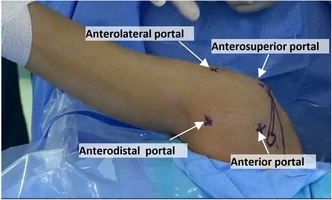
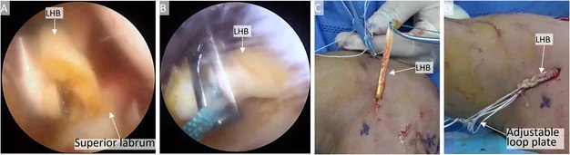
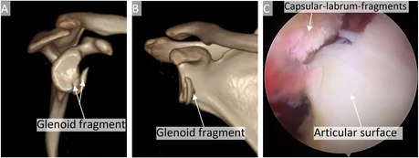
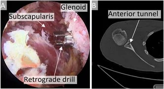
图片来源：原文开放全文（PubMed Central），版权归原出版方
关于本栏目：每日定时检索 AJSM、Arthroscopy、Arthroscopy Techniques、KSSTA、Sports Health、OJSM、J ISAKOS、Sports Medicine、Foot & Ankle International、JSES 共 10 本运动医学核心期刊前一日新收录文献，按关节分类，AI 辅助生成中文精要。
声明：本内容由 AI 辅助整理，仅供学术交流参考，观点与数据请以原文为准，不构成诊疗建议。文献题录与摘要来源：PubMed。
— 运动医学 · 关节镜文献速览 · 第 008 期 —